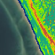
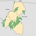

GIS 540
GIS Programming Fundamentals
This course explains principles of computer programming for ArcGIS. The Python programming language is used to demonstrate these concepts. The course assumes no programming background. We start with Python syntax and language elements. Python scripting is used to efficiently run ArcGIS tools, read text files of data and ArcGIS attribute tables, interact with map elements, manipulate batches of GIS data, and create basic user interfaces. Assignments are preformed in Python, ArcGIS, and PythonWin. Teaching techniques incorporate hands-on learning in a stimulating, interactive classroom environment. Students completing this course will be armed to streamline GIS work-flow and build reusable applications.
Sample Student Projects:
| Sediment Transport Research Test Bed -Nathan J. Lyons |
Measuring Impervious Surface for Raleigh Properties -JR Greco |
||
| Creating Map on the Cell Phone -Ali Ihsan Durmaz |
 | Hurricane Irene Erosion Analysis of the Outer Banks in Carteret County, NC Using LiDAR Data -Leslie John Sox |
|
|  | Potential Core Forest Conservation Areas in the Southern Blue Ridge Ecoregion -Rachel Albritton |
Integrating GPS data and geotagged photographs into ArcMap and Google Earth for watershed analysis -Megan Culler |
Programming Language:
Python is used as the scripting language because it is a nice 'starter' programming language. It is a highly readable language. It has an uncluttered visual layout, using English keywords frequently where other languages use punctuation. Some languages require a lot of set-up code before the simple procedure of outputting text is performed. With Python this is not so. For example, the code you need to print Hello is print "Hello".
Topics:
| Course Schedule |
| 1. Introduction to Python | (1 week) |
| 2. Data structures, geoprocessor object & tools | (1 week) |
| 3. Getting user input, flow control (conditional statements/loops), describing GIS data, | (1 week) |
| 4. Debugging and batch processing | (1 week) |
| 5. Messaging, error handling | (1.5 weeks) |
| 6. Functions, Reading and modifying GIS tables | (1 week) |
| 7. Dictionaries, reading and writing text data tables, GUI's | (1.5 weeks) |
| 8. Code reuse: modules, classes | (1 week) |
| 9. Manipulating maps, script tools | (1.5 weeks) |
| 10. ToolValidator, progressor | (1 week) | 11. Writing/parsing HTML and KML | (1.5 weeks) |
| 12. Fetching and uncompressing data | (0.5 week) |
Learning Outcomes:
Students will be able to…